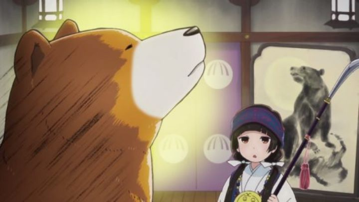

Disclaimer: This is a review of "Kumamiko - Girl Meets Bear" (also commonly written as "Kuma Miko" online, but appearing as one word in packaging).Disclaimer: Spoilers."Kumamiko - Girl Meeets Bear" seems like an unassuming, cute little comedy about a country-girl and her friend, a large talking bear, living in a Japanese shrine. And it is. But the show also got a bad reputation, particularly for the tone of its ending, enough for many viewers to claim it as the worst anime of 2016. That backlash only gave me further interest to watch what all the fuss was about.Set in a (fictional?) rural Japanese town, "Kumade Village" is home to one big secret: a friendly talking brown bear named Natsu. He's treated as the local diety, and lives with Machi, a young girl raised to be the shrine girl, helping carry out daily tasks and rituals based on local traditions and customs. Natsu and Machi are best friends, but Machi is 14, and grows weary of the slow village life, where there's no cellular signal and where stores require a car to travel to. She states with confidence: "I want to go to high school in the city!" But Natsu knows he'll be lonely without Machi. Also, Machi has a reputation in the village for being bad with technology or new trends (even Natsu knows how to use a computer, when Machi still struggles to use an electric rice-cooker). To help disuade Machi (or in a small way, to help her), Natsu begins giving Machi tests in the form of quizzes or challenges, to prove that she has what it takes to be a "city girl." These range from "going to UNIQLO to buy something," or "guess which object is a cell phone." Machi is amazingly dense, and hilarity ensues. This whole gimmick is only a portion of the show. Most of the content is "slice-of-quiet-life," with Machi performing sacred dances with Natsu, or helping her older cousin Yoshio carry out ideas to promote the town's tourism, to reverse the slowing economy of aging farmers. Machi's timidness, and the novelty of Natsu being a role model (and a bear), keep the show cute and fun. Plus a few bear puns, but not too many. Curiously, it's almost educational, spending significant amounts of time portraying shrine rituals and describing specific stores and brands from cities like Tokyo; it is for both old and new Japanese culture what shows like "Dagashi Kashi" was for candy, or "Shirobako" was for anime production. Yes, this is a genre in anime. However, "Kumamiko" definitely has some problems with its tone. From the first episode, poor Machi is teased for her lack of understanding of city culture, and her fear of common technologies. Not only by Natsu or Yoshio, but by the entire village, including the elderly, who themselves are almost as ignorant as she is. You could call it "just teasing," but frankly, it's bullying, plain and simple, and the recurring joke isn't as funny as the show thinks it is. Throw in that Machi often gets roped into playing dress-up or acting as the village mascot for public events, despite her anxiety, and the audience can't help but feel sorry for this girl that puts up with harrassment from her closest friends and neighbors. It isn't until the very end that any of the characters begin the realize that they were doing anything wrong by her. And then there's the ending, which requires spoiling it to discuss it properly. The final two episodes have Machi accepted into a "town idol" competition, taking place in Sendai, the largest city Machi has ever seen. Initially excited, Machi's anxiety only grows when she suddenly goes on stage, imagining her fellow contestants and the audience as angry, calling her a "bumpkin" and throwing rocks at her (entirely in her mind, as everyone around her is actually quite nice and understanding). Running away in fear, she ultimately comes back, able to perform her traditional dance only by imagining the peaceful forests of Kumade Village. She conquered her fears, saw her act through, and even wins, bringing back a trophey to town.  ... but in a scene barely a minute long, we learn that Machi still saw hallucinations of an angry crowd, and ran off again, too afraid to accept her prize in person. In tears, she runs to Natsu's bear arms, claiming she never wants to go to the city again, and never wants to leave Natsu or the village (despite Natsu and Yoshio trying to explain her fears were misguided). It's a happy ending for Natsu, who now doesn't have to worry about his friend growing up and leaving him. And Machi has reduced to the lowest state we've ever seen her, simplistic, and happily ignorant. It's not a happy ending for the viewer, especially when the expected ending (example: "Machi overcomes her fear, becomes comfortable with the city, but appreciates her village even more") would have been so easy to add. Even cutting out about 60 seconds from the final episode would have fixed things enough. Apparently, the original manga author had to speak out his disappointment in how the ending strayed from the source material, specifically citing a a comment made by Yoshio in the show to be particularly mean. It was never clear exactly what line he was referring to... was it his speech where Machi's "sacrifice" as an idol was important for the village? Or was it his meeting afterwards, where he recalls a time when a rock really was thrown at him, and how Machi's fears might not be so crazy after all?The thought put into the episode suggests that it wasn't just an excuse to keep the status quo to allow for a possible second season. It was a harsh way to end things, but also not entirely out of line with the show's questionable sense of humor. Ultimately, the director had to disown the show from his resume, deleting his social media accounts, from the harrassment he personally received for that final episode. Ironic, both because "rocks" were being thrown at him, and because the audience clearly missed the message the episode was trying to convey: "please be more considerate, your words and actions affect others." If it's any consolation, a last-second added scene at the end of one of the OVA's helps backtrack Machi's story, but most viewers will miss it. Personally, these issues were noticable, but not nearly to the extent that most critics described. I still found "Kumamiko" to be adorable. Strong production values help, with colorful backgrounds and designs, and surprisingly decent animation. The opening and ending themes weren't clever, but extremely cute and catchy, and I didn't skip them. The Japanese voice acting was solid (at this time, Wikipedia incorrectly claims Funimation released a dub... perhaps they planned to, until the backlash occurred). Yes, despite its faults, I enjoyed "Kumamiko - Girl Meets Bear." It's a very decent cute-comedy, slightly better than average thanks to those production values. That ending would be more unforgivable if it didn't have a point, but it does, and part of me admires the courage behind it. Perhaps, if enough time passes, new viewers will discover the show and wonder what the fuss was all about.
- "Ani" More reviews can be found at : https://2danicritic.github.io/ Previous review: review_Konosuba_-_God's_Blessing_On_This_Wonderful_World Next review: review_Kurayukaba